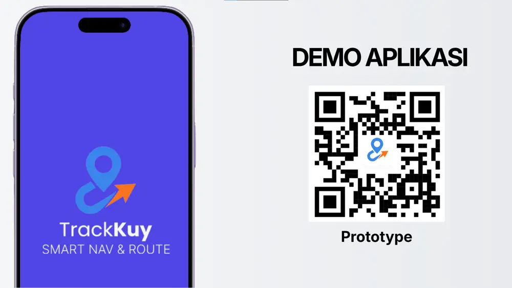
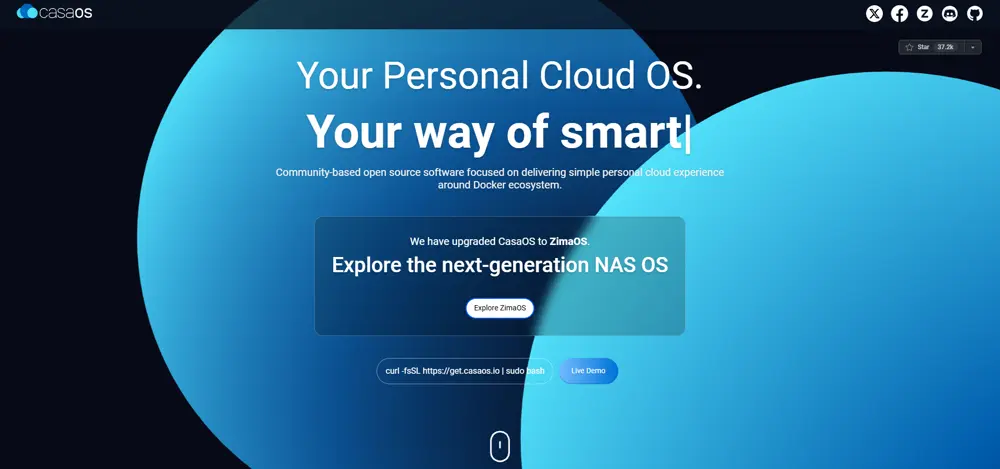
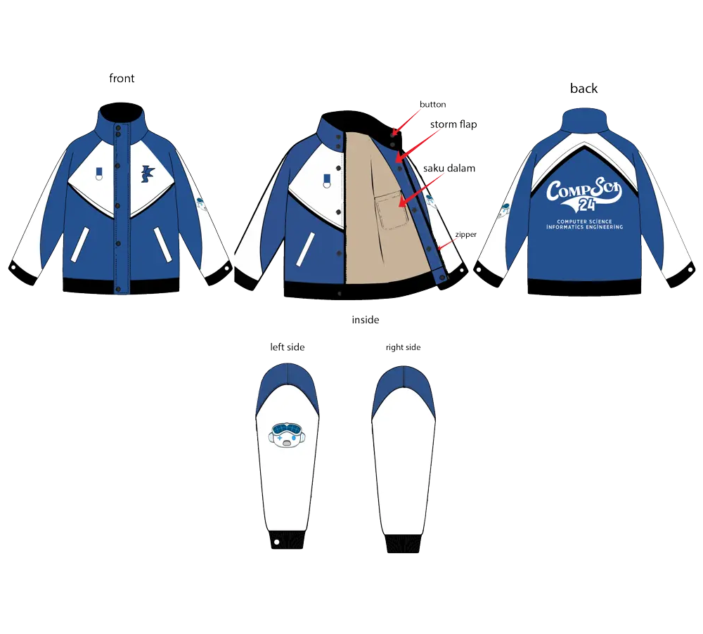
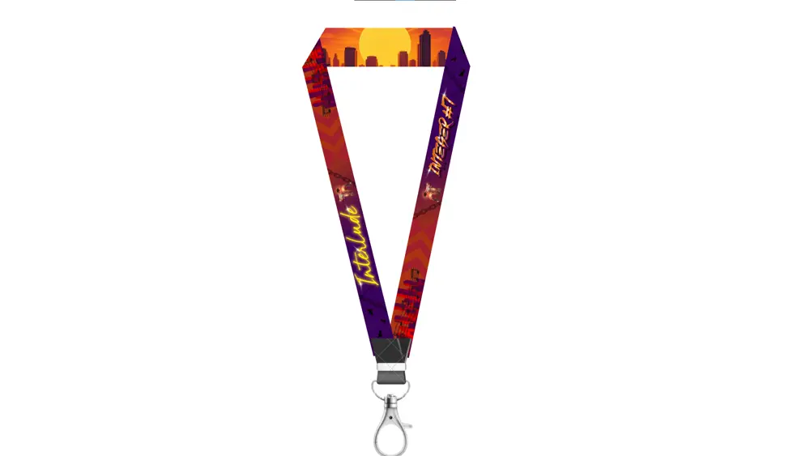
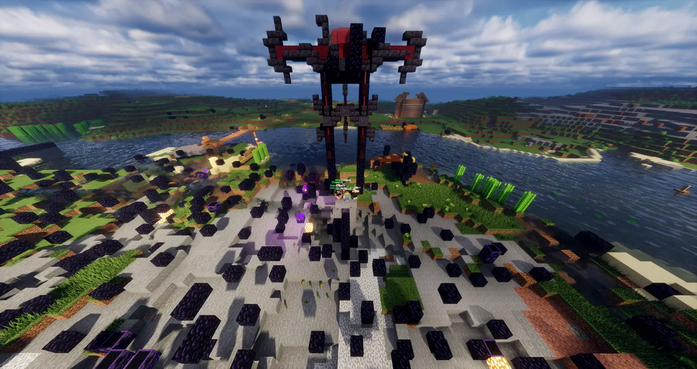
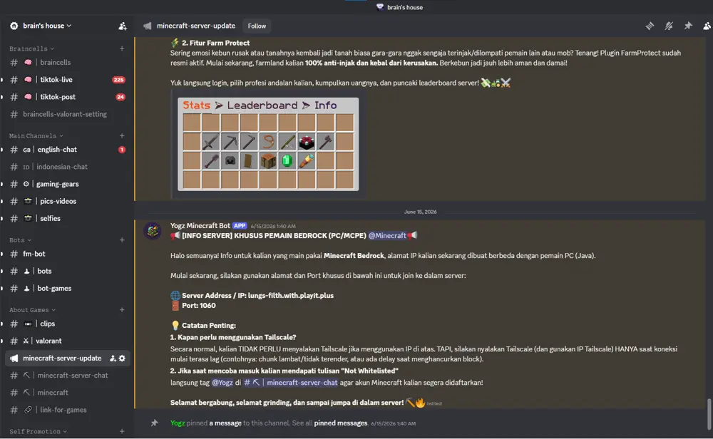

Pilihan Karya.
Eksplorasi antarmuka digital, desain grafis teknis, serta pengelolaan infrastruktur sistem.

TrackKuy App
Perancangan antarmuka pengguna komprehensif untuk aplikasi optimasi rute perjalanan wisata di Pulau Bali yang berlandaskan metodologi Design Thinking.

Home Server Infrastructure
Membangun infrastruktur server lokal mandiri menggunakan Ubuntu Server, orkestrasi container Docker dengan antarmuka CasaOS, serta tunneling aman melalui jaringan Tailscale.

Technical Garment Mockup
Perancangan spesifikasi teknis pola jaket berbasis vektor dengan presisi rasio tinggi, memadukan estetika visual street-wear dengan standar dokumentasi produksi konveksi.

Graphic Design & Event Supplies
Perancangan identitas visual berupa lanyard, name-tag, kartu identitas, dan material promosi untuk menciptakan branding kegiatan yang kohesif dan berkarakter.

Setting Up a Minecraft Server
Konfigurasi server Minecraft multiplayer di environment Ubuntu Server. Meliputi integrasi dashboard Pterodactyl, Paper Server, alokasi JVM ram, dan tunneling UDP untuk in-game voice chat.

Setting Up a Discord Server
Rancang bangun pusat komunikasi komunitas interaktif. Menyiapkan sistem hierarki role terverifikasi, otomatisasi webhook log, serta integrasi bot untuk kemudahan moderasi.